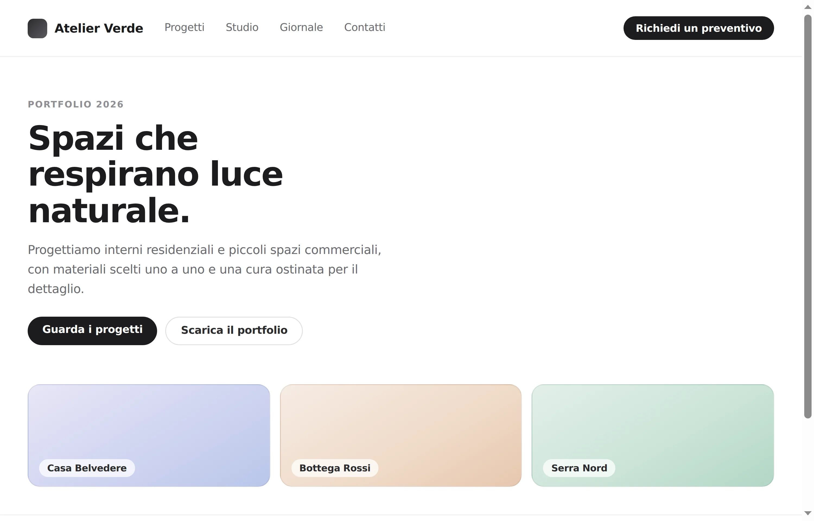
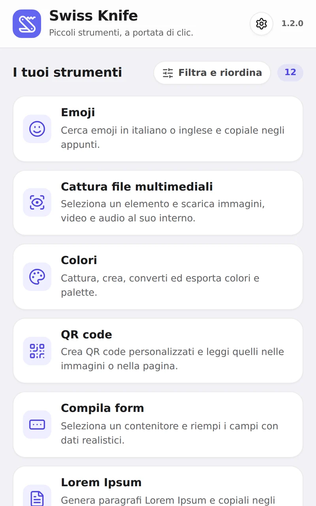
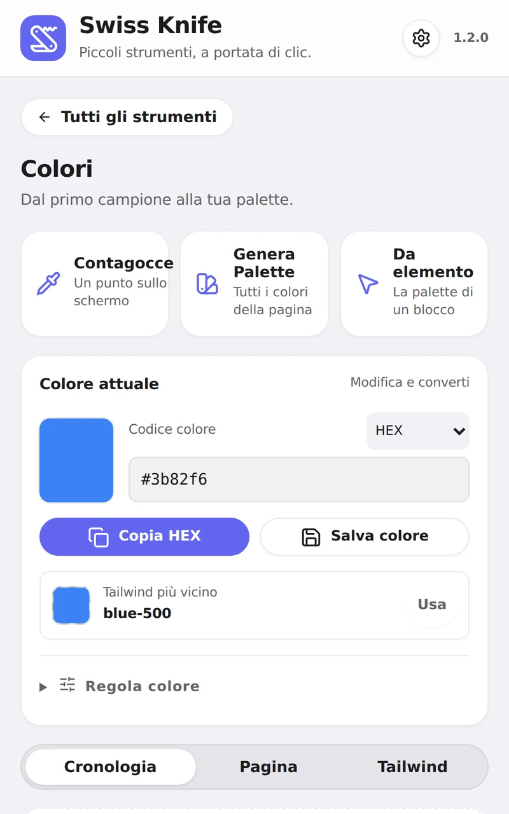
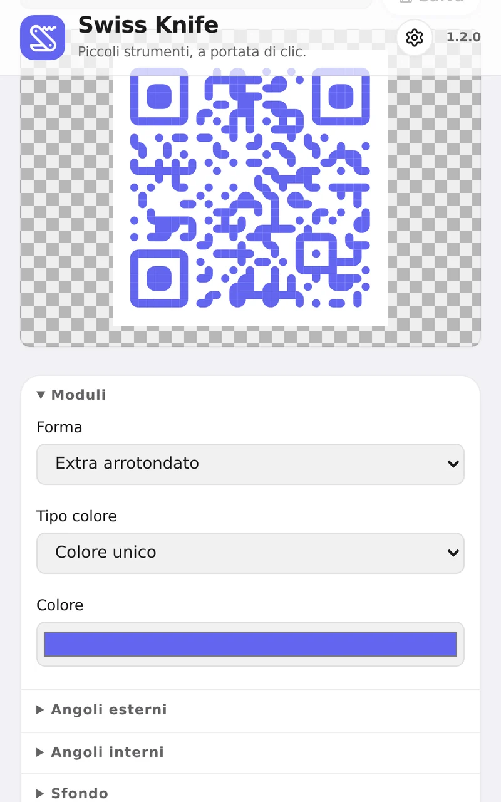
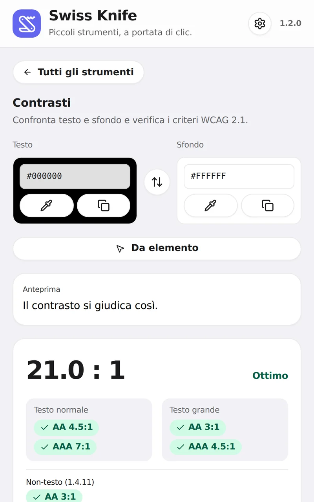
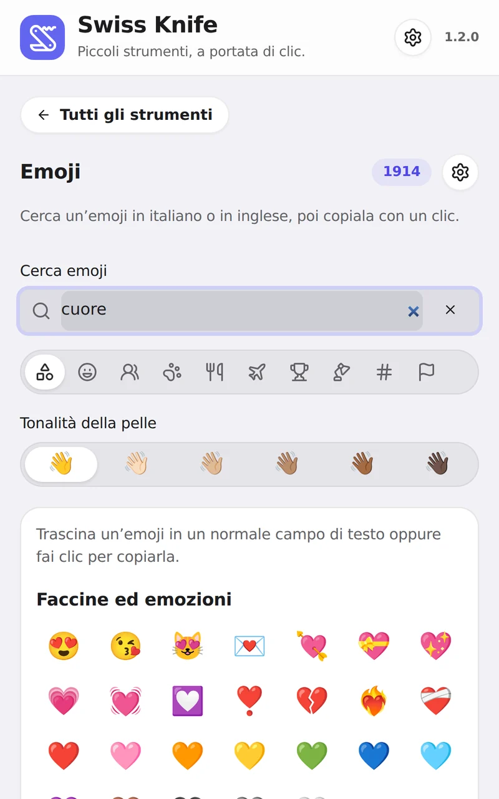
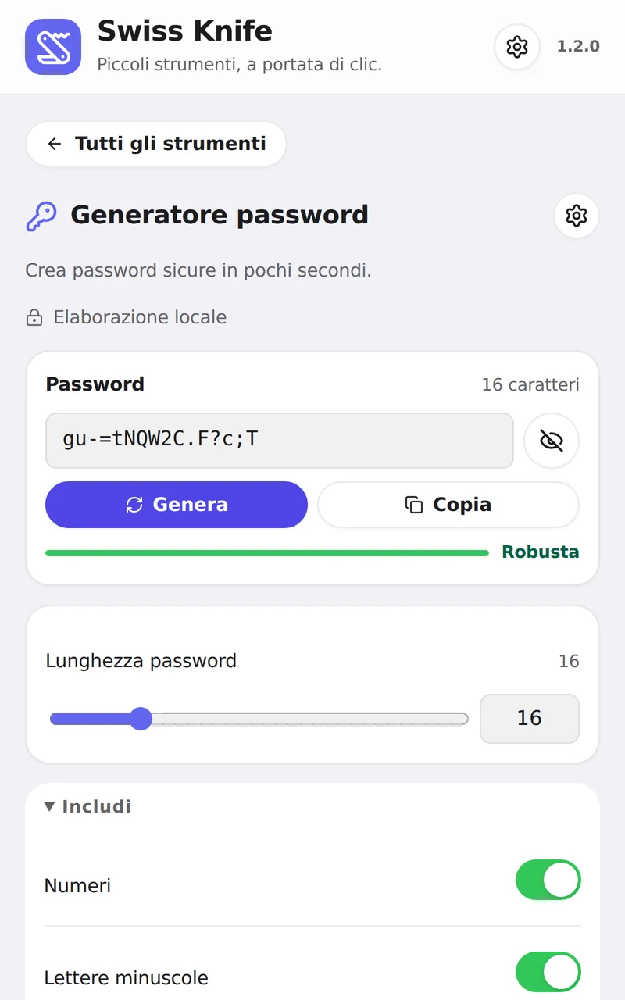

Screenshot
Pagina intera, schermata o rettangolo selezionato. PNG, JPEG o WebP.
Estensione per Chrome · Manifest V3
Swiss Knife raccoglie 12 strumenti per la pagina che stai visitando in un unico pannello laterale. Screenshot, colori, QR code, contrasti, form di prova e altro ancora, senza mai cambiare scheda.


Il catalogo
Puoi mostrare, nascondere e riordinare gli strumenti dalle impostazioni: il pannello contiene solo quelli che usi davvero.
Pagina intera, schermata o rettangolo selezionato. PNG, JPEG o WebP.
Contagocce, palette estratte dalla pagina, HEX, RGB, OKLCH e classe Tailwind.
URL, Wi‑Fi, vCard e altro. Forme, colori e logo su misura, in PNG o SVG.
Rapporto di contrasto ed esiti AA e AAA dei criteri WCAG 2.1.
Proprietà di un elemento, snippet HTML e CSS, anteprima in PNG.
Immagini, video, audio e sottotitoli contenuti nell’elemento scelto.
Dati fittizi coerenti, in italiano o in inglese, senza inviare il modulo.
Ricerca in italiano e inglese, tonalità della pelle, copia o trascina.
UTF‑8, Base64, URL, HEX, binario. Hash MD5, SHA‑256, SHA‑512 e SM3.
Da 4 a 64 caratteri, generate con crypto.getRandomValues().
Da 1 a 100 paragrafi di testo segnaposto, pronti da copiare.
Contenuti incorporati, anche annidati, con apertura in una nuova scheda.
Come si presenta
Nessun mockup: sono catture dell’interfaccia così com’è nella versione 1.2.0.





Privacy
Conversioni, hash, password e analisi della pagina avvengono nel browser. I risultati non vengono inviati da nessuna parte.
Non c’è registrazione e non esiste un server degli sviluppatori da contattare.
L’accesso a tutti i siti è facoltativo, non viene concesso all’installazione ed è revocabile in ogni momento.